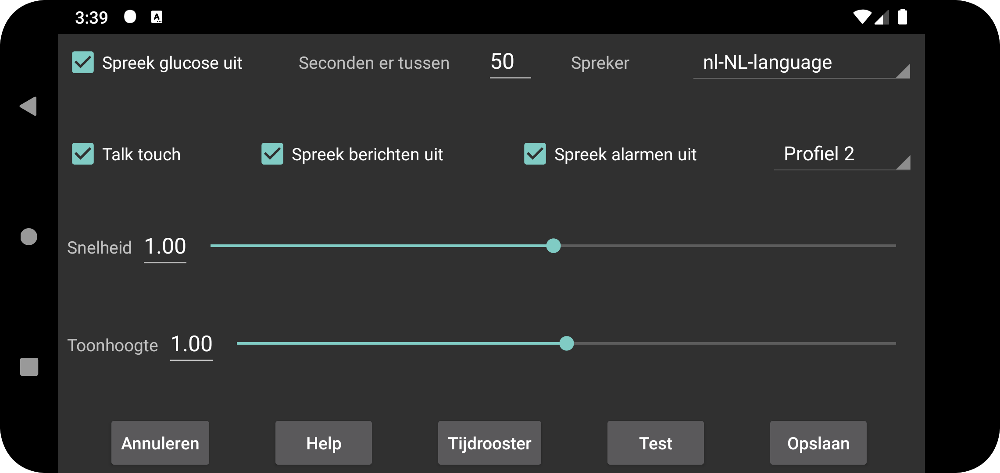

be de es fr nl pl ru tr uk zh en
Spreekt glucosewaarden uit als ze binnenkomen.
Seconden er tussen: Geeft aan hoeveel seconden Juggluco moet wachten voordat de volgende glucosewaarde wordt uitgesproken. Glucosewaarden worden altijd direct uitgesproken als ze binnenkomen. Wanneer een grote waarde wordt gespecificeerd, zal Juggluco glucosewaarden overslaan die binnenkomen voordat deze tijdsperiode is verstreken.
Spreker: Selecteert een spreker uit een lijst met mogelijke sprekers.
Snelheid: een hoger getal betekent sneller praten.
Toonhoogte: een hoger getal betekent een hogere toonhoogte.
Test: spreekt de laatste glucosewaarde uit.
Op sommige telefoons moeten de Android instellingen voor tekst-naar-spraak worden gewijzigd. Soms moeten spraakgegevens worden geïnstalleerd of moet de configuratie worden gewijzigd. Op een Samsung-telefoon moet "Spraakservices van Google" worden ingesteld in plaats van "Samsung tekst naar spraak-engine" om uit verschillende stemmen te kunnen kiezen. Deze opties zijn te vinden door te zoeken naar tekst-naar-spraak of spraakuitvoer in Android-instellingen of door naar Taal en invoer ->Tekst naar spraak/Geavanceerd->Spraakuitvoer te gaan. Hier kunt u "Spraakservices van Google"/"Google text-naar-spraak engine" selecteren en spraakgegevens installeren. Op andere telefoons staat dit onder Systeeminstellingen->Toegankelijkheid>Zicht->Tekst naar spraak-instellingen.
Als Talk Touch is ingeschakeld, zorgt aanraking op bepaalde plaatsen voor praten:
Het aanraken van de huidige glucose;
Aanraken van grafiek- en scanpunten;
Hoeveelheden aanraken;
De datum van dat punt van de grafiek wordt gezegd wanneer de linker- en rechterbovenhoek worden aangeraakt;
Lang drukken op een menu-item;
Lang indrukken van een hoeveelheid in de lijst met hoeveelheden (links midden menu->lijst).
Leest berichten die tijdelijk zichtbaar zijn op het scherm en het resultaat van het scannen (foutmeldingen en de glucosewaarde).
Spreekt het glucoseniveau uit tijdens alarmen voor lage en hoge glucose. Deze wordt zowel bij aanvang van het alarm uitgelezen als op het moment dat het alarm wordt gestopt.
Selecteer welk profiel actief is. Standaard is het standaardprofiel. Alle instellingen in het linkermenu → Instellingen → Alarmen en Praat zijn specifiek voor het actieve profiel.
Je kunt Juggluco zo configureren dat een profiel op een bepaald tijdstip van de dag actief wordt.
Je kunt het volume van het praat-geluid verhogen of verlagen in de Android-instellingen onder Geluid. Als MEDIA niet is aangevinkt, kan ik dit op mijn telefoon doen met de Meldingsgeluid regelaar en op mijn WearOS-horloge met de Systeemgeluid regelaar. Het zou niet hoorbaar moeten zijn wanneer "Niet storen" is ingeschakeld. Wanneer MEDIA is aangevinkt, wordt de knop voor het mediavolume gebruikt en op de meeste telefoons is het te horen tijdens "Niet storen".
Alarmen uitspreken is anders. Alarmen worden uitgesproken in de categorie 'Alarmen' als 'Alarm is Alarm' is ingeschakeld. Op mijn telefoon regel ik het volume met de alarm volume regelaar, op mijn horloge met de melding volume regelaar.